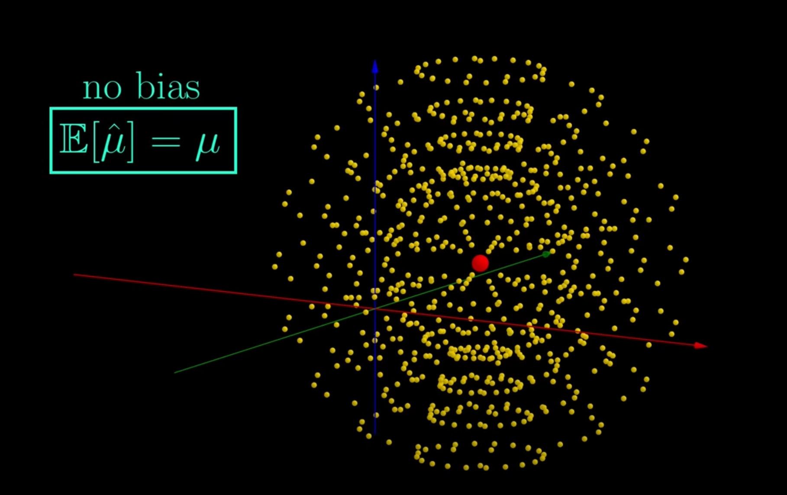
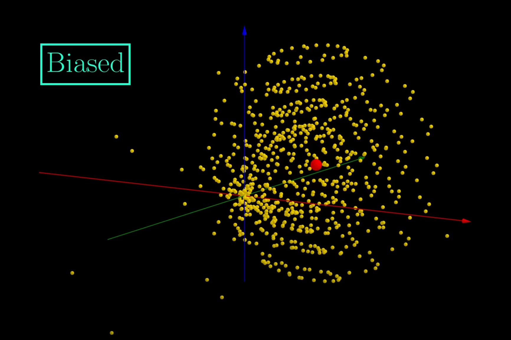
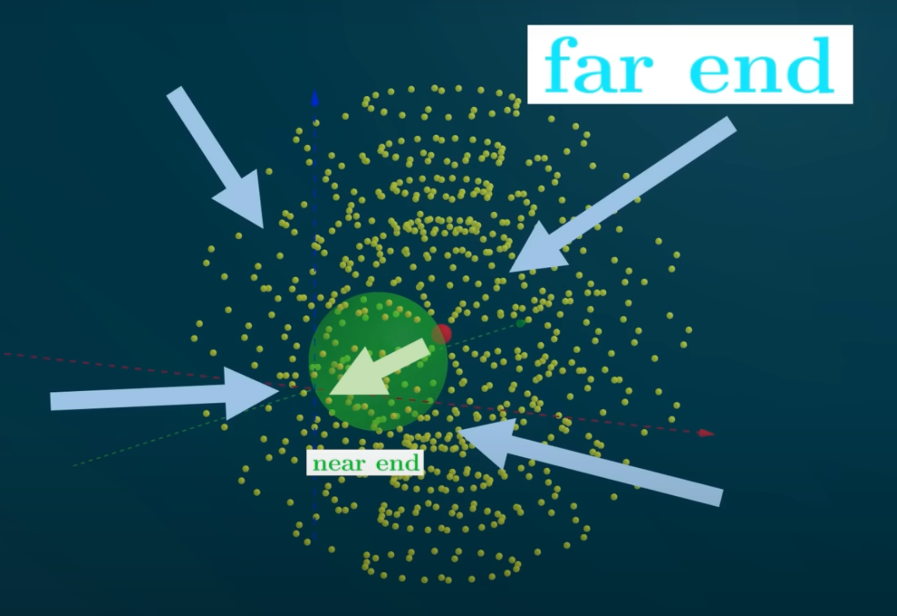

<div id="understanding-the-paradox" class="section level2">
<h2>Understanding the Paradox:</h2>
<p>Stein’s Paradox arises in the context of estimating multiple parameters simultaneously. The paradoxical finding by Charles Stein in 1956 was that, in three or more dimensions, there exist combined estimators that are better (in terms of mean squared error) than estimating each parameter individually, even when the individual estimations are unbiased and efficient for each parameter. This was contrary to the prevailing intuition derived from one-dimensional estimation problems.</p>
</div>
<div id="intuitive-explanation" class="section level2">
<h2>Intuitive Explanation:</h2>
<ol style="list-style-type: decimal">
<li><p><strong>Shrinkage Towards the Mean</strong>: Imagine you’re trying to estimate the abilities of multiple basketball players based on their performances. Instead of looking at each player’s scoring average independently, Stein’s estimator suggests that you can often make a better estimate for all players by slightly “shrinking” individual estimates toward the overall mean. This “shrinkage” can reduce the total error across all your estimates, especially when the players’ performances are influenced by many common factors (like team strategies or opposition strength).</p></li>
<li><p><strong>Borrowing Strength</strong>: Stein’s estimator effectively “borrows strength” from the other dimensions (or other parameters being estimated). When estimating multiple parameters, the information from one can inform and improve the estimate of the others. This is a fundamental concept in multivariate statistics, where the joint distribution of parameters can provide more information than considering each in isolation.</p></li>
</ol>
</div>
<div id="why-it-only-works-for-d-geq-3" class="section level2">
<h2>Why It Only Works for <span class="math inline">\(d \geq 3\)</span>:</h2>
<ol style="list-style-type: decimal">
<li><p><strong>Geometry of Higher Dimensions</strong>: In one or two dimensions, the geometry doesn’t allow for the kind of “borrowing strength” or pooling of information that is possible in three or more dimensions. It’s related to how volumes and areas scale in higher dimensions and the nature of multivariate distributions. Essentially, as the number of dimensions increases, the proportion of the volume of a sphere that is close to the surface increases, allowing estimators to exploit the additional structure provided by the extra dimensions.</p></li>
<li><p><strong>Mathematical Restrictions</strong>: Mathematically, Stein’s Paradox and the associated improvement in estimation do not manifest in one or two dimensions because the risk improvement term (which depends on the dimensionality of the problem) disappears or is not sufficient to overcome the estimation bias introduced.</p></li>
</ol>
</div>
<div id="conclusion" class="section level2">
<h2>Conclusion:</h2>
<p>Stein’s Paradox, through the lens of Stein’s Estimator (or James-Stein Estimator), demonstrates that in higher-dimensional spaces (three or more dimensions), estimators can be constructed that outperform the traditional method of independently estimating each parameter. It’s a result that has profound implications in statistical theory and practice, particularly in how we approach multivariate problems and the benefits of considering the structure and relationship between multiple pieces of data. This principle is widely used in modern statistical methods, including shrinkage techniques in high-dimensional data analysis and machine learning.</p>
<p></p>
<p></p>
</div>
<div id="mathematical-explanation-of-steins-paradox" class="section level2">
<h2>Mathematical Explanation of Stein’s Paradox:</h2>
<p>To understand Stein’s Paradox and the James-Stein estimator mathematically, let’s start with a typical estimation problem. Suppose you have <span class="math inline">\(d\)</span> normal distributions, each with unknown mean <span class="math inline">\(heta_i\)</span> and known variance <span class="math inline">\(\sigma^2\)</span>. Your goal is to estimate the vector of means <span class="math inline">\(oldsymbol{ heta} = ( heta_1, heta_2, ..., heta_d)\)</span> based on observed samples <span class="math inline">\(X_1, X_2, ..., X_d\)</span>.</p>
<div id="traditional-approach" class="section level3">
<h3>Traditional Approach:</h3>
<p>The traditional approach would be to estimate each <span class="math inline">\(heta_i\)</span> independently using the sample mean of the corresponding distribution. This is the Maximum Likelihood Estimator (MLE) for normal distributions, which is unbiased and efficient in one-dimensional settings. So, you might estimate each mean by the corresponding sample mean <span class="math inline">\(X_i\)</span>.</p>
</div>
<div id="steins-paradox-in-estimation" class="section level3">
<h3>Stein’s Paradox in Estimation:</h3>
<p>Stein’s Paradox suggests that, when <span class="math inline">\(d \geq 3\)</span>, you can construct an estimator that “shrinks” each <span class="math inline">\(X_i\)</span> towards a common value (often towards the overall mean or zero) and overall produces a smaller mean squared error (MSE) than the individual estimators. This phenomenon occurs even if each <span class="math inline">\(X_i\)</span> is an unbiased estimator of <span class="math inline">\(heta_i\)</span>.</p>
</div>
<div id="james-stein-estimator" class="section level3">
<h3>James-Stein Estimator:</h3>
<p>The James-Stein Estimator is a famous example that demonstrates this paradox. The estimator is given by:</p>
<p><span class="math display">\[
\hat{\boldsymbol{\theta}}_{JS} = \left(1 - \frac{(d-2) \sigma^2}{\|\boldsymbol{X}\|^2}\right) \boldsymbol{X}
\]</span></p>
<p>Where:</p>
<ul>
<li><span class="math inline">\(\boldsymbol{X} = (X_1, X_2, ..., X_d)\)</span> is the vector of sample means.</li>
<li><span class="math inline">\(\|\boldsymbol{X}\|^2\)</span> is the squared Euclidean norm of <span class="math inline">\(\boldsymbol{X}\)</span>.</li>
<li><span class="math inline">\(\sigma^2\)</span> is the known variance of each observation.</li>
</ul>
</div>
<div id="why-the-james-stein-estimator-works-better-for-d-geq-3" class="section level3">
<h3>Why the James-Stein Estimator Works Better for <span class="math inline">\(d \geq 3\)</span>:</h3>
<ul>
<li><strong>Shrinkage Factor</strong>: The term <span class="math inline">\(\left(1 - \frac{(d-2) \sigma^2}{\|\boldsymbol{X}\|^2}\right)\)</span> is known as the shrinkage factor. It pulls the estimates towards zero (or towards the overall mean if you’re centering your data). The amount of shrinkage increases as the sample means get closer to zero and decreases as they move away. This pooling of information leads to a lower MSE.</li>
<li><strong>Bias vs. Variance Trade-off</strong>: While the James-Stein Estimator introduces bias (since it’s not unbiased like the individual <span class="math inline">\(X_i\)</span>), it substantially reduces the variance of the estimate, particularly when the true means are close together. The overall effect is a decrease in MSE, which is a trade-off between bias and variance.</li>
</ul>
<p></p>
</div>
<div id="mathematical-implications" class="section level3">
<h3>Mathematical Implications:</h3>
<ul>
<li><strong>Dominance over Traditional Estimators</strong>: The James-Stein Estimator is said to dominate the traditional estimator (the sample means) in terms of mean squared error when <span class="math inline">\(d \geq 3\)</span>. This means it has a smaller MSE for every possible value of <span class="math inline">\(\boldsymbol{\theta}\)</span> except for a set of measure zero.</li>
<li><strong>Role of Dimensionality</strong>: The paradox does not hold for <span class="math inline">\(d &lt; 3\)</span>. This is tied to the geometry of higher-dimensional spaces, where there is more “room” to benefit from estimating parameters jointly rather than individually.</li>
</ul>
</div>
</div>
